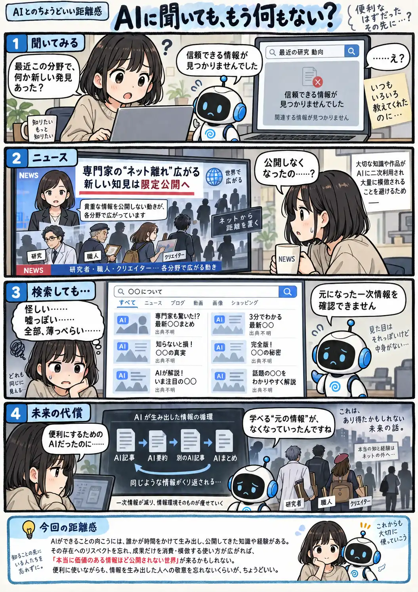

#136
AIに聞いても、もう何もない？
便利になった先で、情報が消えていく。

メモ
これは未来を予言する話ではなく、あり得る未来の一つを描いたIFストーリーです。AIが便利な仕事をこなせる背景には、先人が失敗や試行錯誤を重ね、知識や経験を残し、公開してきた積み重ねがあります。
その価値への敬意を忘れ、成果だけを二次利用し、粗悪な模倣を増やしていけば、情報を生み出す人が「もう公開したくない」と思う未来もあるかもしれません。AIを使う側も、知識の源泉を大切にする。その意識は忘れたくないところです。
今回の距離感
AIができることの向こうには、誰かが時間をかけて生み出し、公開してきた知識や経験がある。その存在へのリスペクトを忘れ、成果だけを消費・模倣する使い方が広がれば、「本当に価値のある情報ほど公開されない世界」が来るかもしれない。便利に使いながらも、情報を生み出した人への敬意を忘れないくらいが、ちょうどいい。